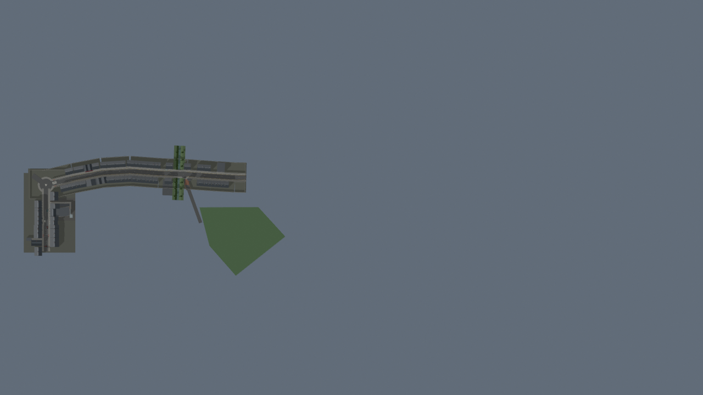
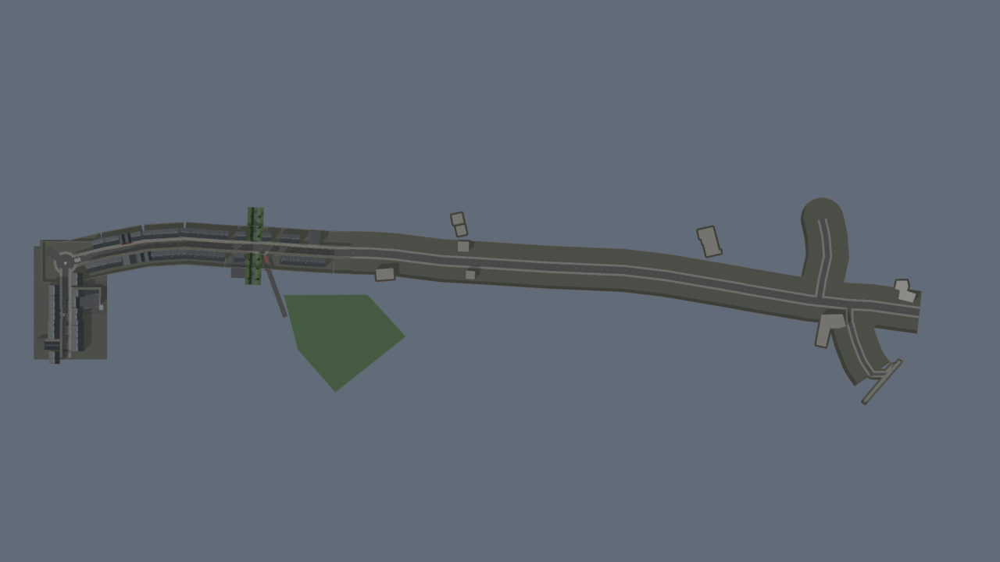
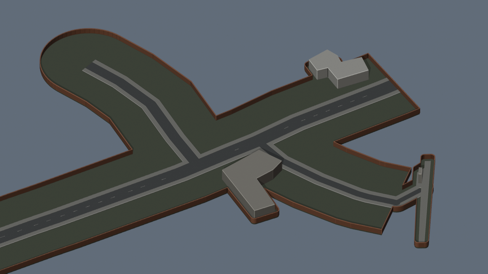
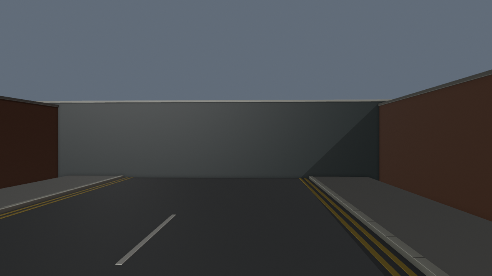
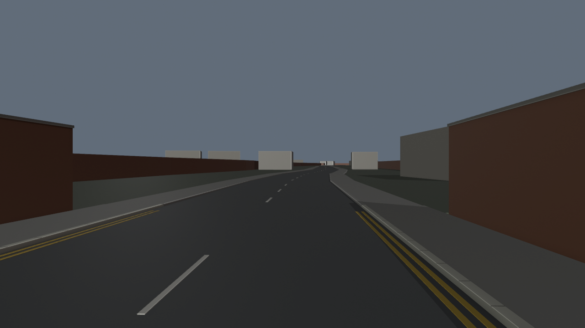
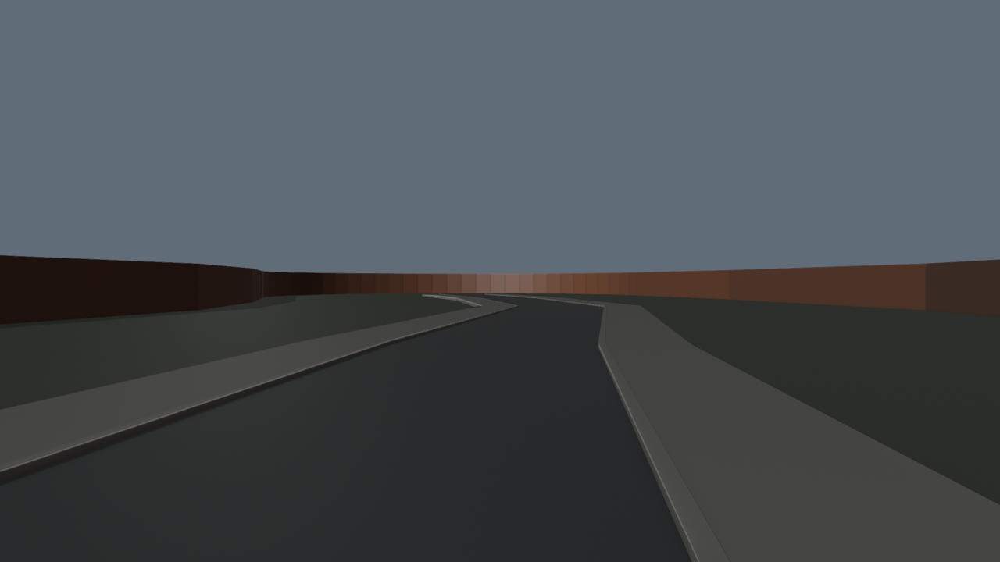

Provisional road blockout. Google satellite comparison and number 29 visual identification remain pending. This is not the completed extension.
Saved editable checkpoint: pharmacie-extension-route-v41.blend. Prior v40 retained. 89 active new meshes after joining the surfaces. 27,999 selected Blender clearance rays and 3,111 ground-support samples pass. BO3 unchanged.
Alignment follows OpenStreetMap road geometry, rigidly tied to the existing gameplay frame. Widths, heights, terrain, perimeter walls, centre markings and final station walkway are estimates. Building masses follow mapped footprints; detailed architecture is pending. Material-colour Workbench previews show shape, not final texture or lighting.






Implementation, evidence and limits · Mapped route and frame · Blender checks